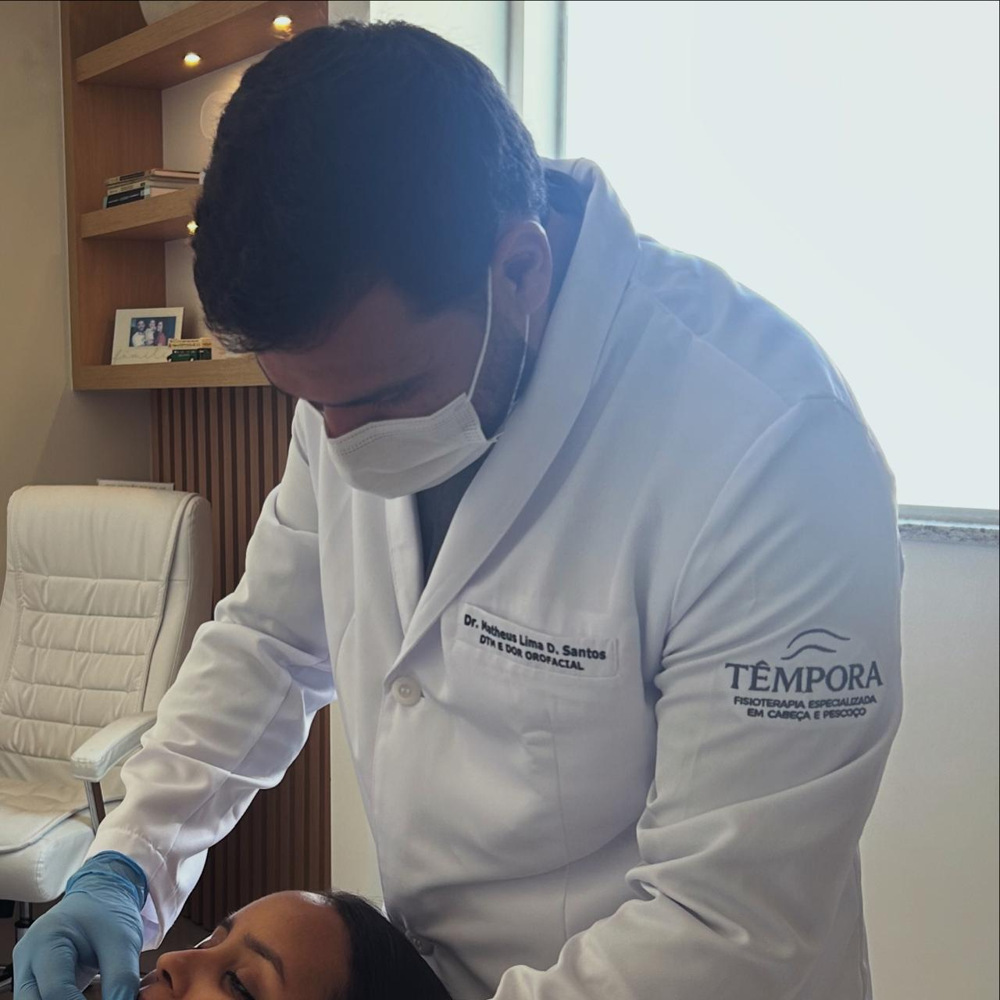
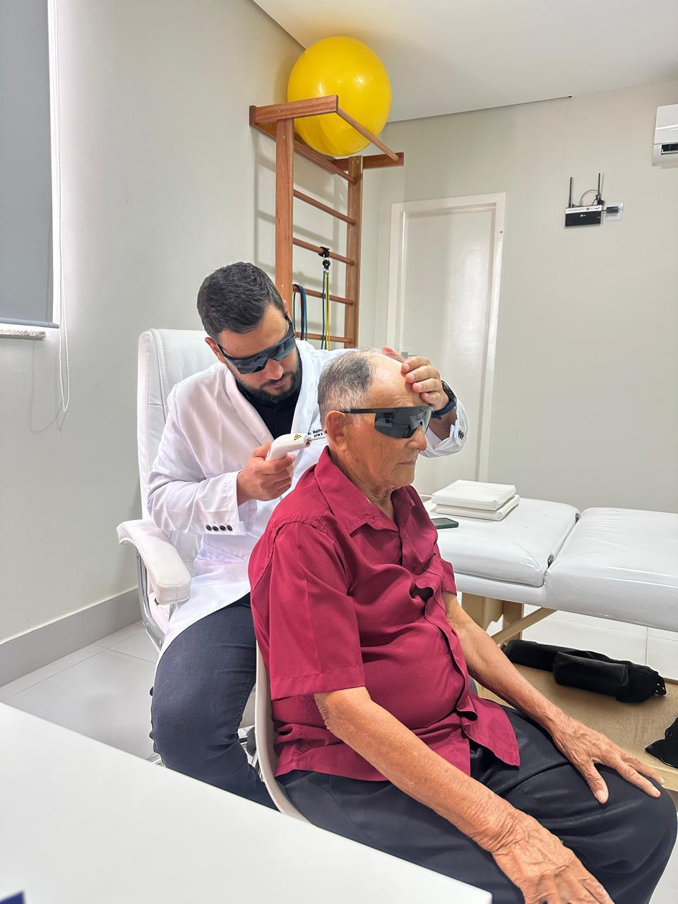
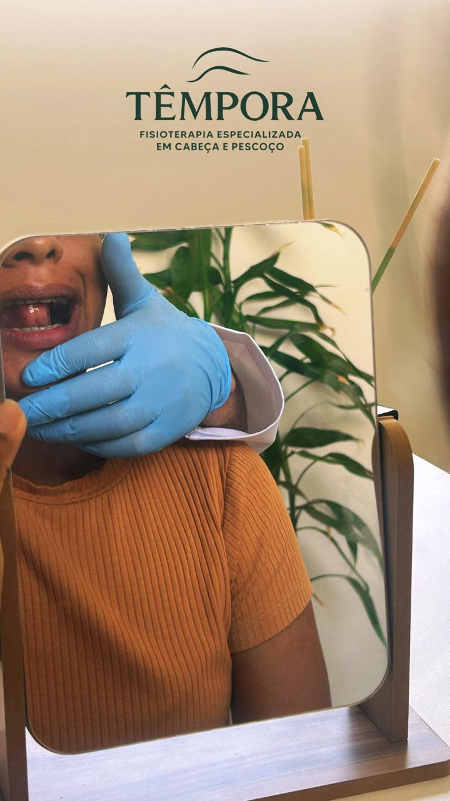
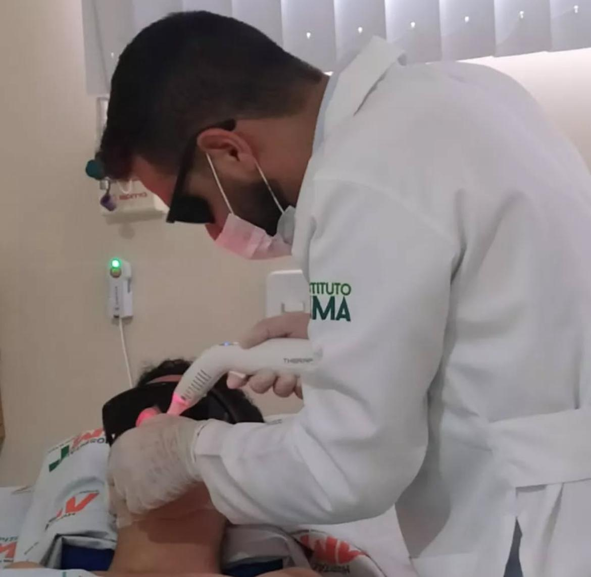
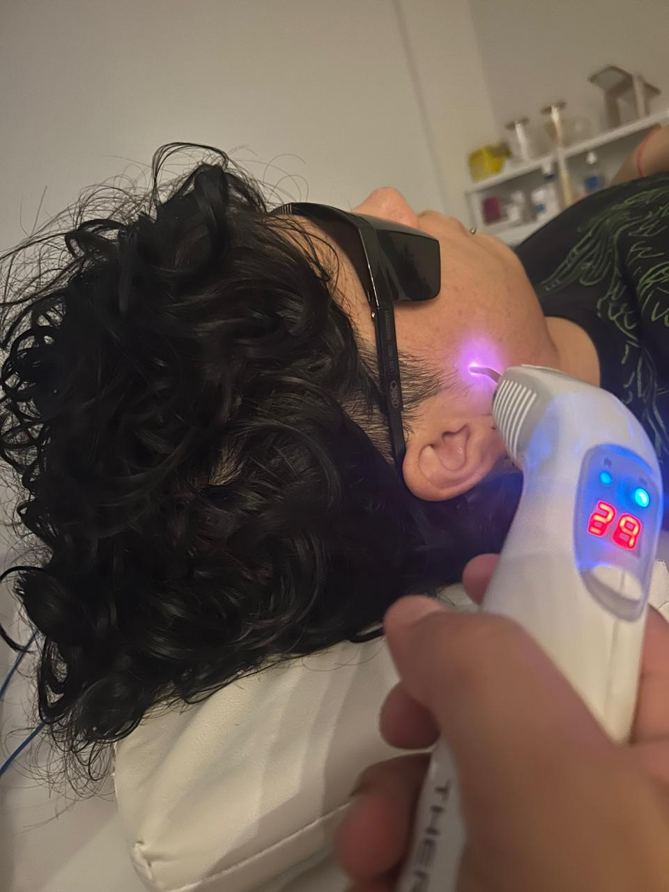
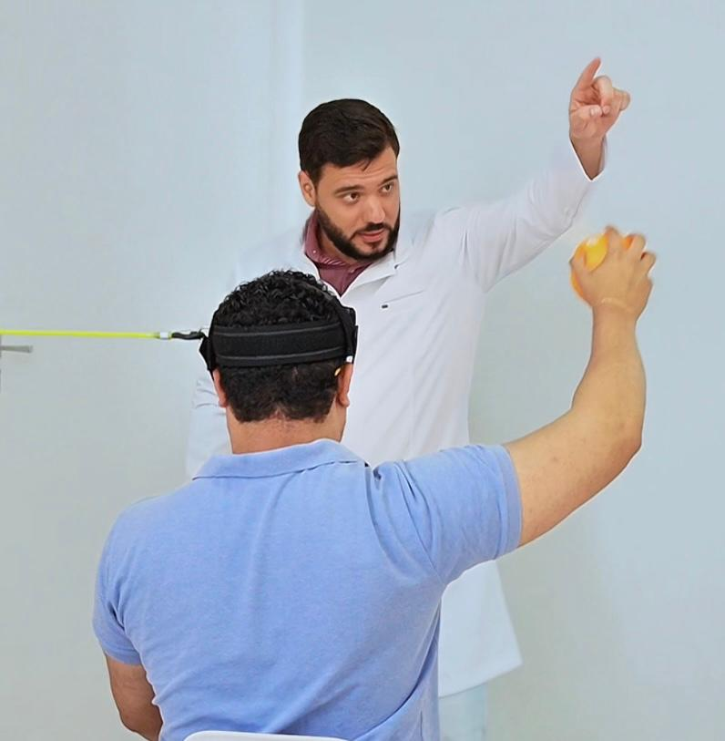
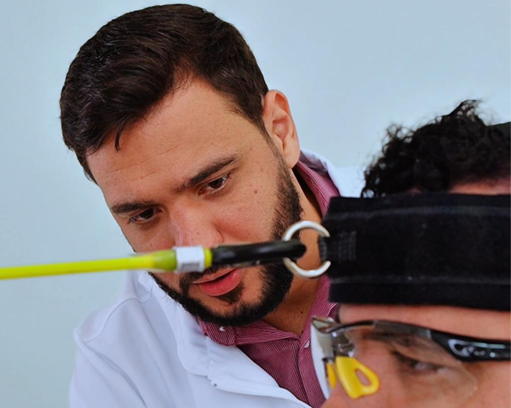

Mandíbula que estala ou trava
Dor ao mastigar, ranger os dentes à noite e aquele estalo que virou companhia. Sinais clássicos de DTM.
Na Têmpora cuidamos do que poucos sabem tratar: a região da cabeça e do pescoço. Avaliação precisa, plano individual e tecnologia para devolver sua qualidade de vida. Pioneira em Irecê e macrorregião.

Cuidado especializadocabeça e pescoço, de verdade
Muita gente convive anos com dores na cabeça e na face sem saber que existe um cuidado certo para isso. Se algum desses sintomas é a sua rotina, a Têmpora foi feita para você.
Dor ao mastigar, ranger os dentes à noite e aquele estalo que virou companhia. Sinais clássicos de DTM.
A enxaqueca e a dor que aperta as têmporas muitas vezes começam na musculatura da face e do pescoço.
Aquele apito constante no ouvido tem ligação direta com tensão na articulação da mandíbula.
Perda de movimento de um lado do rosto pede reabilitação especializada o quanto antes.
Recuperação de fraturas de face e preparo ou reabilitação de cirurgia ortognática.
A rigidez cervical alimenta a dor na cabeça e na face. Tratamos a causa, não só o sintoma.






Cada caso recebe avaliação completa e um plano de tratamento desenhado para a sua necessidade.
Disfunção temporomandibular: dor, estalos e travamento da mandíbula tratados na raiz.
Dor orofacial e muscular que afeta mastigar, falar e dormir, com técnicas específicas.
Preparo e recuperação da cirurgia ortognática para um pós-operatório mais leve.
Reabilitação após fraturas e lesões faciais, devolvendo função e movimento.
Estímulo e reeducação muscular para recuperar a simetria e a expressão do rosto.
Tratamento do zumbido de origem muscular e articular, aliviando o incômodo constante.
A Têmpora nasceu para preencher uma lacuna em Irecê e região: um cuidado dedicado, com formação específica em cabeça e pescoço, em vez do tratamento genérico que não resolve.
Entendemos sua história, examinamos a fundo e identificamos a real origem da sua dor.
Montamos um tratamento sob medida, com metas claras e as técnicas certas para o seu caso.
Acompanhamos cada sessão até você recuperar conforto, movimento e qualidade de vida.
Agende sua avaliação na Têmpora e descubra o que está por trás da dor de cabeça, na face ou na mandíbula. Em Irecê-BA, atendendo toda a macrorregião.